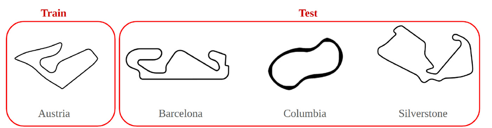

Why model-based RL breaks on contact with hardware
Model-based RL is sample efficient because it trains the policy inside a learned world model, and that is exactly why it breaks on contact with hardware: the model is fit to one simulator and one track layout. Two specific failures dominate. The policies come out bang-bang, saturating the steering at both limits in a way no physical servo tracks and no servo survives for long. And 1080 LiDAR beams flattened into an MLP throw away the spatial structure that makes a scan interpretable in the first place.
DreamerV3, adapted for a real car

- Adapted DreamerV3 to the F1Tenth platform. Observations are 1080 LiDAR range measurements over a 270° field of view, rendered as an image so DreamerV3's convolutional encoder and reconstruction loss get spatial structure to work with instead of a flat vector. Actions are target longitudinal speed and steering angle.
- Trained in Racecar Gym (PyBullet) rather than the standard F1Tenth Gym, for a physics model closer to the real vehicle.
- Shaped the reward as track progress from a 5 cm-resolution distance transform of the track, plus a speed term, plus quadratic penalties on steering angle and steering rate (an LQR-style action cost), plus a large negative terminal reward on contact with the boundary.
- Deployed on real hardware: Traxxas chassis, VESC 6 MkIII ESC, Hokuyo UST-10LX LiDAR, Jetson Orin Nano running ROS 2 Foxy onboard, with the Dreamer model itself executed off-board across a ros-bridge.
The policy trained on a single simulated track from raw LiDAR and then drove the physical 1/10-scale car with no real-world fine-tuning and no retuning, so DreamerV3's fixed-hyperparameter recipe held across the sim-to-real gap. In simulation, trained on Austria alone, it completed 65% of runs on Austria and 100% on the unseen Columbia layout.
What survived the servo
- Treating the LiDAR scan as an image. Rendering the beams into 2D lets the convolutional encoder impose an inductive bias the MLP encodings used in prior racing Dreamer work do not have. The world model's reconstructed scans track ground truth closely, which is the evidence that the latent state actually holds track geometry rather than a memorized policy.
- The quadratic steering penalties changed the shape of the policy, not just its score. The steering histogram goes from piled up at the two limits to spread across the range. That is the difference between a command stream a servo can follow and one that just chatters.
- Picking the simulator with the more comprehensive physics model over the more popular one was a sim2real decision made up front, before any tuning, and it is what left nothing to tune afterward.